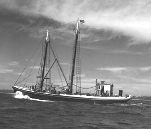

|  copyright - WHOI |
Built: 1914 in Rockport, MA. Length: 76' Beam: 16' Draft: 6'3" |
WHOI purchased Reliance from Mr. C. G. Eldridge of Noank, CT.
The vessel was used for explosive work during World War II and for the
study of fish noise. Reliance was transferred to the Navy
January 4, 1954.